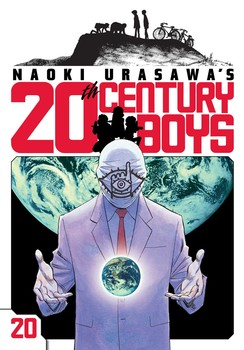
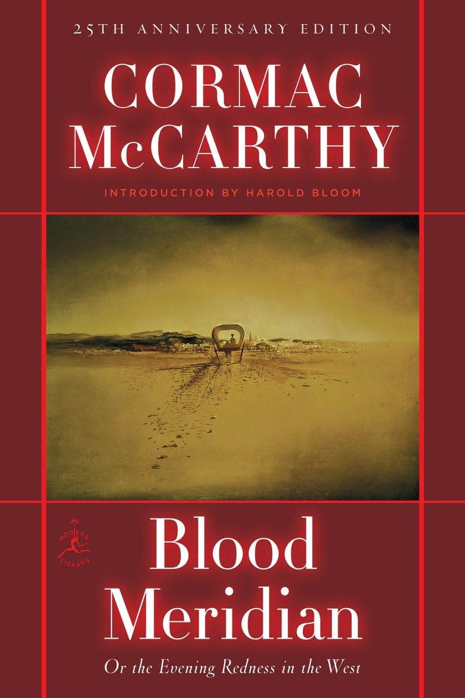
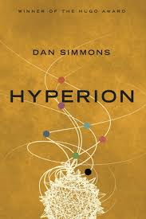
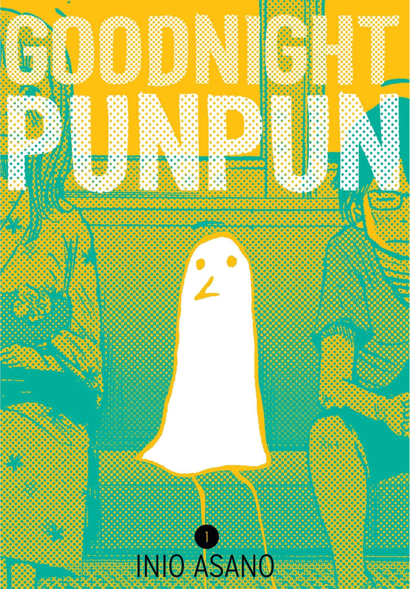
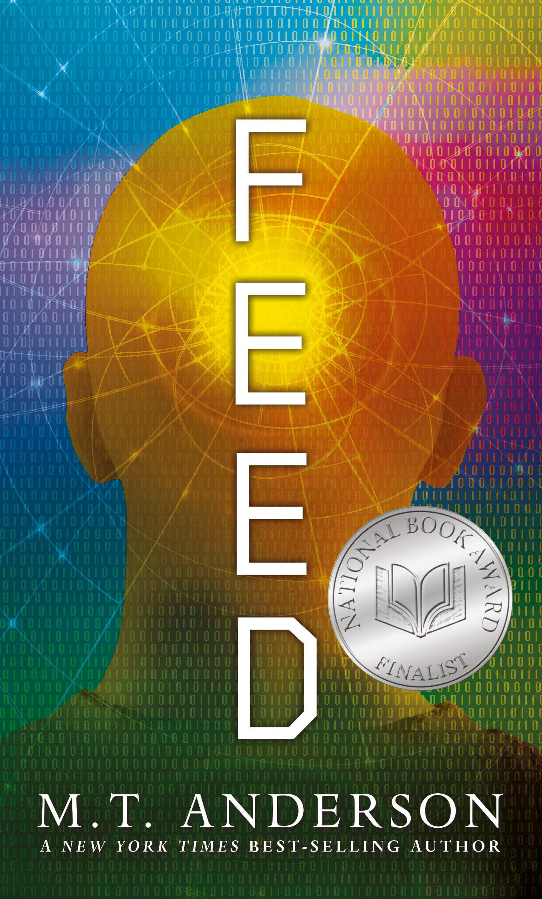
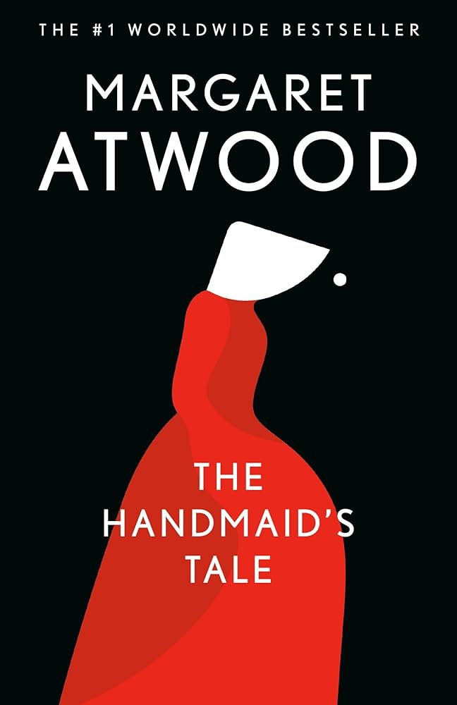
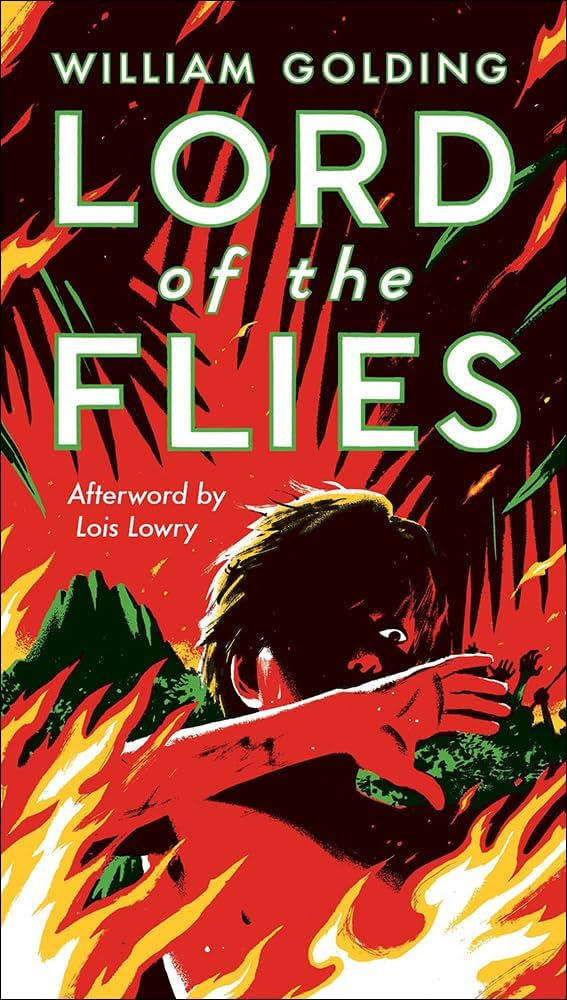
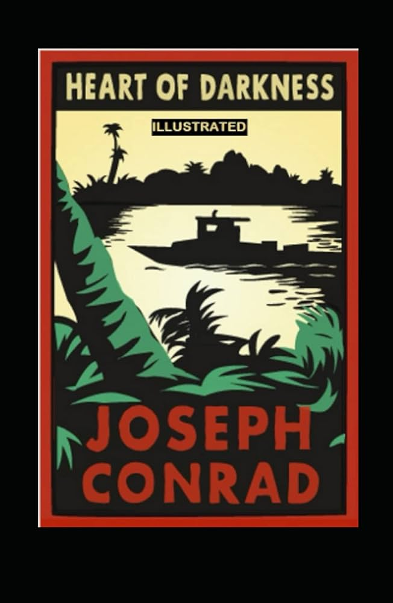
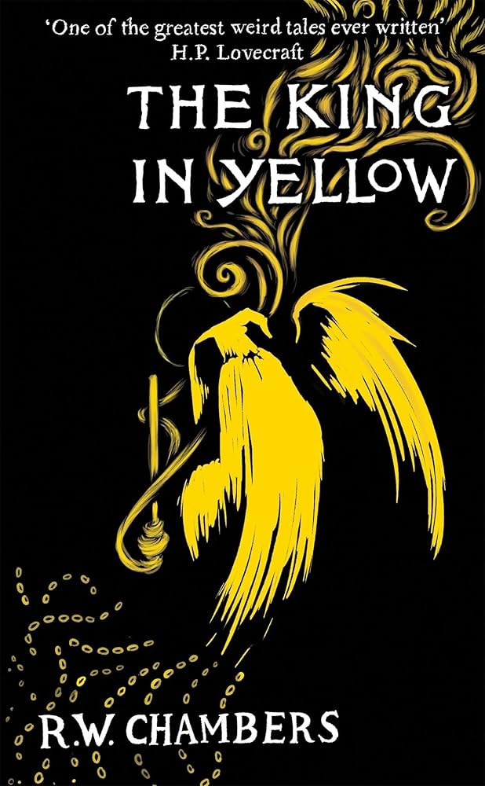
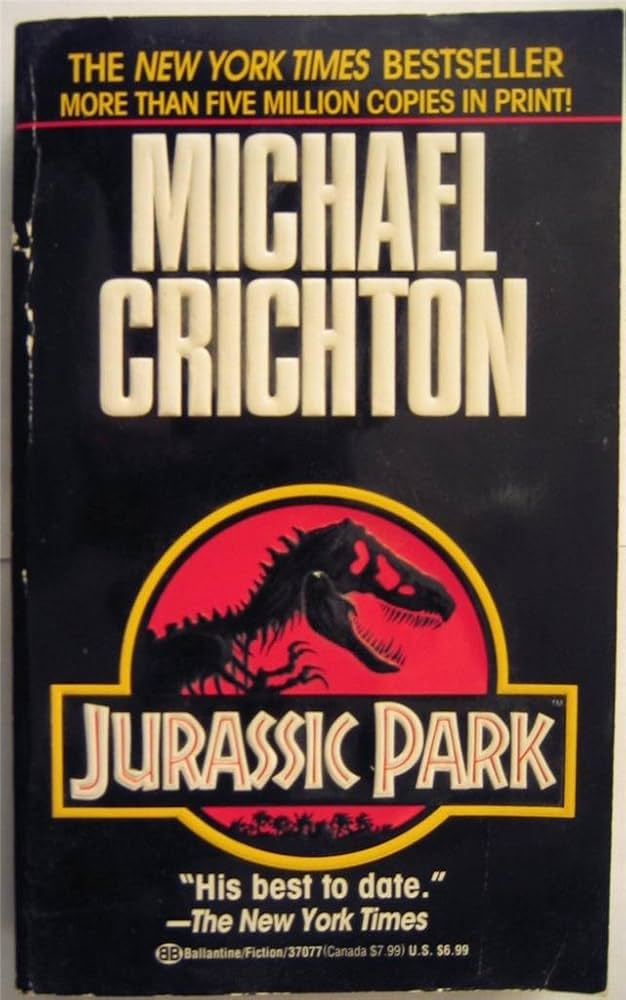

Before grade 5, I only read non-fiction(mainly books about dinosaurs and animals). In fact, I
didn't read any fiction books because I though they were boring and silly(since they were made up).
This
all changed when a certain book caught my eye in the paper for the book fair: Percy Jackson. Ever
since
then, I've been reading a lot, whether that be manga or novels. So, now I want to share some of my
favorite books here.
Percy Jackson was THE book series that got me into reading in the first place. I saw it in the
bookfair paper and after begging my mom to pay 30 bucks, I got all 5 books. I was hooked and
finished all 5 books within a month and I was then on the hunt for the next book to read. In
fact,
for a long time, I was only reading Rick Riodan because of how much I liked Percy Jackson. I
think
the main thing that really pulled me into Percy Jackson was the action, I was a pretty simple
minded
kid and imagining a kid running the ones with Aries is extremely captivating. Other than that,
Percy
is just a great main charecter.
The Heroes of Olympus Series
This is a continuation of Percy Jackson as we see the goat once more but we also get to see some
roman
gods, which are just ripoffs of the greek ones but I digress. This book series was also amazing
because
we got to see more world building like with the introduction of the roman camp and it was also
interesting to see Percy lose his memory, leading to essentially a repeat of what happened in book
one.
My favorite part of this book was probably seeing Percy and Annabeth going down to Tartarus,
surviving(like the goats they are)
and then bassically turning Percy into Achilles. The other charecters they introduced aren't the
most
memorable(it might be because I last read these book years ago). Once I get around to rereading this
series(along with all the others in this section of my website) I will put a rating down.
The Kane Chronicles Series
Kane Chronicals was also very nice, I didn't really know it existed and only found it by my cousin
giving me all three books. I liked the way that the powers in this book worked, instead of demi-gods
that have innate powers, the charecters use magic. This led to some really cool scenes like when
Carter
makes a huge magic avatar of Horus. Another thing I like, which I like about all Rick Riodan books,
is
that we get to explore different mythologies and Egyptian mythology is just so cool. I also really
enjoyed the sentiant baboon, that was a ton of fun for little me.
Magnus Chase is the norse mythology entry for Rick Riodan's catalogue and I enjoyed this series
throughly as well, which of course I did because it's by Rick Riodan. It introduced more world
building
aspects and Magnus was a fun protaganist, he reminded me a good lot of Percy, who also shows up in
this
book series.
The Diary of a Wimpy Kid Series
If you haven't read Diary of a Wimpy Kid as a child, you're either a fetus or an ancient relic of a
human, me being gen z, I obviously read Diary of a Wimpy Kid when I was younger. The first few books
were incredibly relatable, with my favorite being rodrick rules(since I am the older brother). I
also
remember that whenever I went to Costco and saw the new Diary of the Wimpy Kid book and getting my
mom
to buy it, this continued into middle school and stopped by grade 8 since I: A. grew up and B.
Costco
removed the book section. I do miss the old Diary of a Wimpy Kid books, as compared to a lot of the
new
ones, they felt more like an actual middle schooler's journel, while the new ones just felt like the
author wrote about a bad, drug induced dream.
The overthrow trilogy(from what I remember) was about dangerous plants suddenly popping up across
the
world, our 3 main charecter meet up and then they learn they each have an attribute of a different
animal, those being a kangaroo, lizard, and bird. In book two, giant bugs begin showing up and they
also
get captured by the government where they meet others like them. Book 3 is the full scale alien
invasion, with the plants and bugs being used to terraform the earth. My quick overview does not do
this
series justice because for a children's book, it doesn't beat around the bush at all when it comes
to
what
one of the alien races is doing to the others(kinda reminds me of Wings of Fire in that aspect). I
also
really love the idea of aliens terraforming a planet using mosterous plants and bugs. I'd say the
main
draw though was the charecters, two of them had a dynamic of friends that are no longer
friends(which 13
year old me could relate to) but slowly rekindle their friendship. I really need to reread this
series
because I remember that this series was amazing and incredibly underrated.
Wings of Fire is so, so good. It was one of those books series which doesn't beat around the
bush(something I loved as a kid) and it's not just a simple story about dragons destined to stop a
war.
There's a ton of politics between the different dragons, esspecially the Nightwings using their
reputation to bassically CIA their way to getting out of their volcanoe home. I'd say my favorite
dragonette is Clay because he gives off this older brother and gentle giant vibe, something I
personally
strive for. Another thing that this series did which was really unique was that each book is from a
different perspective, which made it a lot easier to like all of the charecters. I also really like
how
they did humans in this series, at first my pea brain didn't figure out that Scavengers were
acctually
humans. It's interesting seeing humans be so sidelined, it was very different from anything else I
read at the time.
Keeper of the Lost Cities
Keeper of the Lost Cities was one of my childhood favorites because for a kid's series, it has
pretty
complex worldbuilding. That and the villain group in this series feels like an actual threat. The
reason
for them feeling like a threat is because Sophie and her sqaud don't beat them even once. That and
what
they did to Kefee in book 8, which in the way it was written, sounded brutal. I also like how Sophie
wasn't
just some rule following protaganist and instead acctually rebelled against what the Black Swan told
her
to,
like when she destroyed the Neverseen's storage house. Keeper of the Lost Cities reminded me of
Percy
Jackson
quite a bit but I do personally perfer Percy Jackson.
The main draw to this series was its humor, the charecter interactions were the funniest out of the
books I read(yes, even more than Diary of a Wimpy kid). That and I liked the twist of the series, I
went
in expecting it to just be a normal survival apocalypse story with a tinge of romance but it soon
became
a bunch of kids having to fight interdimensional cultists who want to bring a planet destroyer to
earth.
Did I also mention that there's magic? That while a surprsing turn of events, was a welcome one and
made
the series memorable. Other than all that crazy shennagins, Jack is just a great protaganist, he's
funny
and I can't help but root for him when he's talking to June. Other than that, the entire group just
has
some of the best synergy that I've seen in a kids book.
The How to Train your Dragon Series
I was very surprised to find out that How to Train your Dragon was based off a book, so, when I saw
the
book in my school's library, I immediately picked it up. The books are way different than the movies
in
every single way possible but not in a bad way. Similar to the movies though, the books are a coming
of
age story of Hiccup. The books also had a lot more death in them. Now, the most memorable thing was
the
opening lines. "There were dragons when I was boy." This first line is from a now old hiccup and it
is
an
absolute banger, it is melancholic and it immediately made me lock in because I wanted to know what
happened
to the dragons. I'd say the books are on par with the movies, they were amazing.
This is one of those books that you forget existed but when you do remember that it was a real book
that
you read, you have nothing but fond memories. Oragami Yoda is one of those books and even though I
wasn't a Starwars fan(I knew very, very little about Starwars) I still throughly enjoyed the books.
It
reminded me of OG Diary of a Wimpy kid but with the added inclusion of an oracle in the form of
Oragami
Yoda. Another thing that I still remember about this game was this pencil and paper star wars game
that
the charecters in the book played. I played the hell out of that game with my friends during
sleepovers
and hangouts.
I don't think Goosebumps needs an introduction because these books have become insanely famous among
children and I was one of those kids who just loved these books. I first discovered Goosebumps in my
school library and the book I had picked was "The Blob that Ate Everyone". It isn't my favorite
Goosebumps book but it was so different from everything else I was reading at the time that I got
reeled
into all of R.L Stine's books. There was a time for about a year or so, where everytime I went to my
local library, I would solely pick up 2 or 3 Goosebumps books.
Unplugged was the first book I read from Gordan Korman and I think I had first picked it up because
I
wanted to try something different and because there's a baby alligator on the cover. This was very
different from everything else I read but I really enjoyed it as a teenager. The charecters were
really well written which they had to be considering there wasn't much action. I also really liked
the baby alligator(Needles), he's so cute.
I picked this book up after reading Unplugged as I really enjoyed that book and
Schooled is by the same author. This one is deffinitly more memorable than Unplugged and I really
loved
this book. The book's protaganist is a hippie which makes him so unique compared to anything else I
read. Another thing I really liked was that the book had a really feel good vibe and it was so much
fun
watching him cimb through the ranks of the school and eventually become everyone's friend through
his
kindness. The most memorable scene is deffinitly him memorizing and then reciting every students
name IN
THE WHOLE SCHOOL. It was really memorable and I loved the charecters in this book.
I used to be a strong Mha hater, I was out there on the front lines making sure to slander Mha as
much
as humanly possible. I only started reading it because of All Might and I am glad I did. Mha is a a
pretty simple story at heart, a boy without powers inherits power from his idol for showing bravery
and
then goes to a super hero school to hone his power and defeat the bad guy. While the simple story
may be
a turn off for some people, in my opnion, I think it benifits the story because it allows us to
focus on
the charecters more and in mha, the real stars of the show are the charecters themselves. Another
strength of mha are the villians. In a lot of shounen stories I've read, really only the main
villian is
really interesting and compelling but in mha, I found all the villians to be very interesting and I
think this is the case because each villian has a tie to the hero cast in some way or another. For
example, Dabi is compelling because of his relationship with Shoto and we get a whole chapter in the
final arc that focuses on Dabi which was one of the best emotional beats in the entire story. We
also
get a bunch of chapters focused around the Todoroki family which really helps build Dabi up as a
villian
despite not being the main villian. Now the main villian, Shigaraki. Shigaraki is by far the best
villian and one of the best written charecters in the whole story. The reason he works so well as a
villian, is because he mirrors Deku perfectly. Him and Deku both grow exponetially after they lose
their mentor figures at their big fight(All Might loses his powers and AFO gets imprisoned). On top
of that, their ideologies are complete opposite of one another. Shigaraki wants to destroy
everything because he sees nothing of value in the world anymore, the heroes or villians, to him it
doesn't matter. On the other hand, Deku wants to save everything, even during the final fight, he
tried his best to reach through to Shigaraki and to save him too. Abosolute nihilism vs optimism.
A lot of the side charecters in Mha are also amazing. All Might is a great example of this, he's one
of
my favorite charecters because he is one of the best embodiments of hope I've seen in manga and on
top of that
seeing him having to grapple with the fact that he's lost his powers and now has to learn how to
teach was
very well done and realistic. Another thing Horokoshi does well is making charecters change, he does
it in such a
realistic way. For example, with Bakugo, he doesn't just change overnight but he also doesn't
stubbornly cling
to his false ideals. He does his best to change and he sometimes makes mistakes and goes back to his
old ways. Which
I feel is very realistic to how people change in real life.
Now as much as I do like mha, mainly for the charecters, there are some things I dislike. Firstly,
the world building isn't great. America is introduced and so are other countries but we don't see
enough of them for it to mean anything. Secondly, I wish we saw more of what the Hero's Association
direct role was in a lot of sociatal problems as even in a super powered society, there shouldn't be
a need for heroes as everybody has powers so there isn't inheritly a power imbalance. Third, I
really wish we had gotten to see more of Stars and Stripes, she was such a cool charecter and I feel
like she was used bassically as a plot device to weaken Shigaraki. Fourth, a longer Deku vigilante
arc would've been amazing because I found the concept pretty interesting. Lastly, I wish that
Horokoshi wouldn't be so scared to kill off developed charecters. In the PLF War arc, there wasn't
as big of a stakes since we knew none of the main cast or side cast was going to die. The only
person who died who was somewhat significant was midnight but I didn't really care for her so it
wasn't that big of a deal. I think they should've deffinitly had grand torino die, no reason for the
old man to survive getting donuted by Shigaraki.
The Road is incredibly different from any other book that I have read. Not only is there not any
punctuation other than periods, the writing style is very different from anything I've read. It is a
very bleak story, it emphasizes the fact through its setting, which Mcarthy does a great job of
visualizing, but through the charecters too. To me, The Road is all about the relationship and bond
between a fathers and their children, and how fathers will be willing to give up every last thing
even if it means their child has a even a slight chance at a better life. Throughout the story, it's
hard to wonder why the father is trying so hard to get to the coast, what is the point in even doing
so? The world is over and everyone is going to die, that and he's in terrible health and he's
starving. So it could've been easy for him to just abandon his son because it's only an added burden
to him. I think he does all this because he thinks that even if there's a sliver of a chance that
his son makes it, then all his pain and suffering will be worth it. Another thing is how the boy and
his father keep their morals, unlike a lot of the charecters we see(like one group who litterally
cooked up a new born) the father and son continue to cling to their humanity even though it causes
them more suffering in the short term. I think the reason for this is because the father doesn't
want to curropt the innocence of his child. The Road was deffinitly a hard book to understand and I
am probably going to watch a few video essays on it to get some more perspectives but for me the
theme of the book is all about the lengths a father will go to protect their children, how they will
sacrafice everything for them.
1984 is probably the most meaty book I've read, not in the sense of the book's length but more so
the content and how dense the book is. The first thing I noticed about the book, was how communist
everything was, which was esspecially noticable after having read Animal farm. For example, all of
the
party members call each other comrade and the fact that there are no noticable brand of products,
such as
victory coffee, victory cigarettes, etc. The communism parts of the story aren't very important to
me because
really what happens in the story can happen under an capitilist government or a communist
government. The
surviellence state in 1984 is very similar to a lot of systems in place today, such as palantir
databases and
one thing I liked about the book is how the charecters, no matter what, don't really feel like
people even when
they aren't under surviellence(or at least when they think they aren't) and I think thats because of
them being
conditioned to constantly surpress themselves and their thoughts that they can't act normal even if
they aren't
being watched. One qoute I hear a lot is “The Party told you to reject the evidence of your eyes and
ears. It was their final, most essential command.” and I think that recently, the Epstein Files
showed me how real this qoute is. With the current adminstration telling you "oh
Epstein did all on his own" or "Trump was a secret FBI infromant, thats why he knew Epstein" and etc
etc, they were trying to get you to reject all the previous evidence, to reject your logical
thinking and just believe what they are saying. This whole situation only made me wonder what else
have they lied about? Where they tried to cover up something and telling us to ignore our own senses
and logic and to offload our thinking to them. The main thing I grappled onto in the book was the
idea of the 3 superstates.
Oceania, Eurasia, and Eastasia are the 3 super powers in this world and they are constantly at war
but it isn't war in a traditional sense as there's no form of victory. They can't conquer one
another and they are completely independent in their economies, so why do they go to war? Well at
first they say its just because they fight over some states in Africa for resources but thats not
true as they don't need those resources. Really its revealed that the real reason is that they need
to give the people an enemy so they can't revolt upwards and they need to create a false sense of
scarcity to further exert control over the people. While we aren't at the point of this, there is a
lot of things I find similar to real life. For example, there's 3 super powers in the real world
that don't interfere with one another that declare eachother the enemy and then engage in constant
proxy wars to try and them harm them. Another thing is giving people an enemy, sometimes its the
muslims, sometimes the chinese, and other times the russians but just like 1984, the media always
makes sure to give us an enemy to hate. Another thing that I noticed is the minute of hate, which is
where party members are made to hate goldstein and whoever else they claim enemies by being shown
violent imagery. To me, this is similar to bots posting horrible things online to get people riled
up. Like for example, some pro-isreal bot will post something to make people angry which makes it
even harder for people to point that anger in the right direction. You can also compare this with
the news and how we're constantly overloaded with horrible news that makes us angry and sad. The
thing I walked away from 1984 with was probably the sheer importance of crtical thinking, obviously
I knew it was important, but this book made me realize just how important it is. If you can't think
and form your own opnions, then you can be controlled, manipulated, and abused by the system and
those above you. That and blindly following anything will always lead to more harm than good.
I began reading this mainly because of palantir and specfically what they have been doing with ICE
and in Isreal, and the the parallels are scary to say the least. In Minority report, we follow
Anderton, the founder of the precrime system which is bassically 3 future seeing mutants who look
into the future to then predicte who will commit a crime. The precog mutants are described by
Anderton as idiots and that they don't understand any of the data and simply output information.
This is pretty similar to modern LLMs which don't particularly understand the implications of what
they are saying and are simply providing the desired output no matter what that output is. The main
problem with the precrime system is that arresting people who haven't commited a crime means that
you're arresting innocent people. This would be ok if it was 100% accurate but that's shown to be
possibly be false when Anderton gets accused to kill a man he doesn't even know. Long story short,
to prove his innocence he finds the minority report(the report of the mutant who disagreed with the
other two) but even while doing so still ends up killing the man. Now it seems that the precrime
system is accurate and Anderton even says so at the end but I think its him reassuring himself it is
and making sure it continues as it's his only legacy. He says that the first report that he would
kill is cancelled out by the second report that he wouldnt which is then cancelled out by a third
that says he would kill, meaning that he would kill. The reason I find this logic of his flawed is
because what if he had 4 and the 4th one said he wouldn't kill or a 5th or 6th and so on so forth.
No matter how many mutants you have, you can't be 100% sure as there's an infinite amount of
possibilities that could happen in the future. Which brings me to these AI surviellence systems that
try to predicte where people go, what they will do, and if they are there illegal or not, etc. This
isn't possible to do 100% accurate as you would need an infinite amount of information just as you
would need an infinite amount of precogs mutants to make the precrime system 100% accuarate. As for
why I think he is saying this to reassure himself is because throughout the entire story, he is
constantly
nervous and scared that his assistant, Ed Witwer, will take over his role and thus he would lose his
legacy
as the precrime system is seemingly the only significant thing that Anderton has done in his
lifetime.
I read The Kite Runner for my grade 12 english class and I throughly enjoyed, which surprised me
because ussually I hated books that I read for english class. I found all of the charecters to be
realistic and compelling, esspecially with how Amir acts. Amir is a great representation of how
guilt effects people and he has great charecter development, going from a cowardly kid to being
incredibly brave. I also really enjoyed his relationship with his father because it was just really
realistic. His dad isn't potrayed as evil like a lot of these stories do but it is more nuanced
which I really enjoyed.
I thought that I wouldn't enjoy Hamlet but I acctually really enjoyed it. Hamlet as a charecter is
complex and it's difficult to piece together what he believes because sometimes he will say one
thing
but then do somethings to complete contradict that. There's also so many layers to Hamlet, his views
on
death, his relationship with his mother, his view of women, etc. All of these different layers can
have
whole essays(and likely have had) written about them. That and some of the metaphors are beautifully
written such as when Polonius gives Laertes advice. The only complaint that it is difficult to read
it
and if I tried reading it on my own, I'd probably call it dumb and leave it but luckily I got to
experiance it fully.
Animal Farm is a pretty obvious reflection of the communist uprising in Russia. I mean the animals
quite litterally call eachother comrade but too be honest, that's not what I really focused on. For
me it was about how powerful people will sieze power and then close the doors behind them by
corrupting law. In Animal Farm, the pigs constantly change the laws but they don't do it in one
swift motion instead they slowly curropt it which is similar to what happens in real life where
powerful people slowly redefine the rules and they do it so slowly to make sure the people don't
notice. Another thing is how Napoleon creates his own enforcement force that being the dogs and that
similar to a ton of regimes where the dictator creates a police force. Other than that, I also
really enjoyed Boxer as a charecter and his story was so tragic. He worked so hard and truely cared
about the animals and the movement only to be turned into a propagandic symbol to the other animals,
completely taken advantage of.
There's a lot of things that JJK does well and the things it does well, it excels in. It has some
great charecter designs such as Mahoraga and Heian Era Sukuna. It also has an amazing power system
thats complex and robust which leads to the fights being more based around skill instead of just who
has the strong technique. This is seen the most in the Gojo vs Sukuna fight(one of the best shounen
fights of all time) where we see both fighters having to adapt and change their strategies in real
time. There's also so many interesting and unique abilities such as Infinity/Limitless, Idle Death
Gamble, Deadly Sentencing, and my favorite Boogie Woogie. The charecters are pretty well done too.
Gojo is a very realistic representation of the strongest and him being nothing more than just a
weapon is really emphasized in the final arc. I really enjoyed Yuji's development as well, watching
him go from just being a cog in the machine to slowly filling in the role Gojo did of supporting
those around him. It's like going from a nail in house to a strcutural pillar. Then I can't forget
about my absolute favorite charecter, the goat, the one and only AOI TODO. I love this man, not only
does he support Yuji at every turn he also has one of the most interesting techniques in the entire
show, an absolutely amazing charecter all around. I also really enjoyed Maki and her entire arc with
the Zenin Clan and it was really satisfying to see Maki win.
With all that said, there are some things I dislike about JJK and I think it all stems from the fact
the JJK is only 200ish chapters, which is way too short and ends up making the story fall a little
flat. There's things left unanswered such as the merger and Kenjaku's goals and I feel like it was
weird that Higurama and Yuta somehow survived when it seemed like they died. It was surprising too
since Gege has a tendency to kill charecters. Another thing that I think about a lot is why was the
Jujitsu Society so unprepared and had bassically no plan to fight Sukuna? Realistically, with the
right team, they could've taken out Sukuna a lot easier, esspeically after he got weakend by Gojo
and Kashimo. My explanation for this is that it's because the society was so reliant on Gojo and
thought that he would clear up all their problems again but the problem with me saying this is that
there isn't too much I can really point to say this. I think that if the story was longer, this side
of jujitsu society could've been explored more. Another thing is that some really cool charecters
didn't get utilized much, the two that come to mind are Kashimo and Yuki, I really wish we got to
see both of them more and in Kashimo's case, I wish he put up more of a fight against Sukuna. I
think
all of these problems would be solved by just having more chapters.
Brave New World, similarly to 1984, is a dystopia novel focused on a future society thats in
complete disarray. I found this slightly more realistic in the way that the people are subdued,
instead of constant monitering(which would be incredibly difficult to implement) people are created
in factories and then conditioned from birth. Now obviously, you can't perfectly condition anything,
so they provide all sorts of stimulation to distract the people from any thoughts about the system.
I also really enjoyed how the plot works. We first start from the perspective of Bernard, someone
who has something slightly off with him due to a mishap when he was an embreyo, and we see the world
through his eyes where everyone is happy except for him and how he hates everyone for that reason.
Then we meet John, a man from a savage reservation(a place where religion and nomadic lifestyles are
practiced) whose parents are both from the new world. Bernard uses John to get women and money, as a
reader, it almost started to normalize the society a bit since we were looking at it through
Bernard's eyes. Lastly, we switch to John's pov which shows us how messed up everything is in this
society and how immoral it is. I think you should deffinitly give this book a read but do be warned
there are a lot of very scientific and in depth explainations in the book which are pretty difficult
to understand.
Mister Magic was in all honesty, a pretty forgettable and boring book. I was pretty excited going in
since I saw people compare it to crystal cove but I think it is a very different story and they're
only similar at a glance. The charecters are pretty generic which really did make a lot of the story
a slough to get through. The book itself was not very scary and had very very minimal horror. There
are somethings I liked of course, such as seeing things like emails, forum discussions, and even a
fandom wiki page for the mister magic show. I really liked this, it made the story very unique and
was a fun way to also have some world building.
The Staircase In The Woods
I picked this book up because of the creepypasta, I enjoyed the creepypasta a lot so I was quite
excited to get into this book. Overall, I would say this book was decent, there's somethings I
really enjoyed and others I really hated. The first thing I enjoyed was how the house was described
when they had first got in. It reminded me a lot of a liminal space, esspecially when they were
going through
various different rooms from different times. Another thing I enjoyed was Owen's charecter, I do
have my gripes with him too but he is overall my favorite charecter. I also have a tendency to bite
my nails, pull at skin, etc so seeing a charecter like Owen have to deal with it felt very
relatable. Another thing I enjoyed about Owen is that he is pretty much the only charecter who has
any real charecter development, he goes from this coward who is too scared to do anything(for
himself and others) to being the one holding the group together, its a simple arc but it was
decently done. I also enjoyed seeing the mental decay of the charecters, seeing them snap and fight
while stuck in the space. Now onto what I dislike, firstly, Lore. She is by far the most annoying
charecter of the whole book, its not because she's on the left but it's because of how aggresive she
is with everyone, she starts almost every single arguement that happens and just comes across as
incredibly pretencious. She is also incredibly selfish which just adds onto her bad traits. What I
hate more than Lore in this book are the ending chapters of the book. Now I should've seen this
coming considering just how much they were handfisting it in hindsigh but bassically it turns out
that one of the charecters, Nick was possessed by the house and it also nearly possesses Owen. I
didn't like this too much but it was pretty well foreshadowed so not too many complaints but what I
really didn't like was when they tell Nick about how cool he was to snap him out of his possession
and then Nick just tells us the origin of the place their in. The origin is pretty lame, bassicaly
some tramatized vet killed his family in this house and then the house began to hate, becoming the
place theyre in somehow. It was so lame and it only got lamer as they find a way to the center of
the house where they find the military vet and his family(all as puppets) and then they fight him
with some of the most corny and cringe dialogue of all time. It was just really really lame, I was
enjoying a lot more when the house was like this mysterious entity that seemingly hates you for no
real reason that you can comprehend but just giving the backstory in a single chapter all at once
just kills any intrigue I had. If you're thinking about reading this book, I'd say to just go read
the creepypasta it's based off as its much better.












I think MHA catches a lot of flack because of the fanbase but it is genuinely a really
great and inspiring manga, esspecially seeing how Deku gets back up no matter what.
Another thing is that Horokoshi has some of the BEST manga art I've seen, esspeically
in the later chapters. So, I'd say to give it a shot before hating on it.
The Road is very different than anything else I've read, not only does it not have any
chapters
or
proper punctuation but it has some of the best descriptive language I've seen. I've been
able to
visualize things in The Road better than any other book. I think esspecially the
environment,
its
described as so bleak and grey constantly, which really reinforces it. Another thing is that
this
book really forces you to chew on the content to figure it out, so if you like having to
think
and work through what you're reading, I'd throughly recommend The Road.
1984 is one of those books that I think everyone should read, it is scarily accuarate for
something
written back in the '40s. Other than it's importance, 1984 is a meaty book, giving you a lot
to
analyze and think about once you've read it. The writing is also really nice, there's a ton
of
lines
that are just bangers.


 >
> >
>